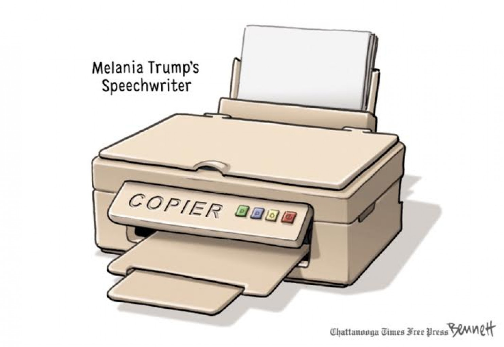
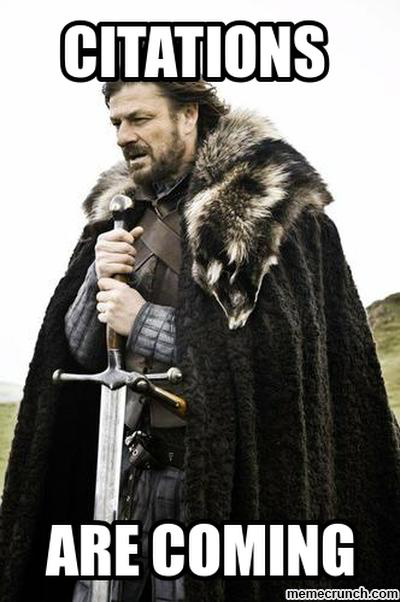

Cite Your Sources
Use footnotes and a References page in our APSci class.
Citing sources is a necessary part of being a student. You must make it clear which information comes from you and which comes from the sources listed in your footnotes and the references page.
Why should you cite your sources?[1]
- Shows you have done your research
- Adds credibility and support to your research and recommendations
- Allows others to reproduce your research process
- Acknowledges others' contributions
There are many different styles available for you to cite your sources. In our APSci course at Prudentia, we will use a simplified APA format for citing all sources. I require footnotes in your written papers and a References page at the end of each paper.
References Page
Every paper you write in APSci should have a reference list.
The References page provides information that your readers will need to find the sources you used in your paper. It also demonstrates the depth of your research.
There is a difference between a reference page and a bibliography:
The References page includes all and only sources you cite in your paper. A Bibliography lists every source you read to do your research, even if you don’t cite that source.
- Begin the Reference page on the first page after the body of your paper.
- Center the word References at the top of the page and capitalize the first letter of the word References.
- Keep the same margins, spacing, page numbers, and headings as the body of your paper.
- List each reference by author’s last name. List the authors in alphabetical order.
- Use the publication year to list two or more references by the same author.
- Be as specific as you can: cite a specific page, page range, particular chapter instead of the whole book.
APA Style Citations Examples
Website or Webpage:
Author’s name. (Date of publication). Title of work. Retrieved month, day, year from http://website name
(make sure you have the full URL cited – click it yourself to make sure it is linked correctly)
Books:
Author’s last name, first initial. (Publication date). Book title. City of publication: Publishing company, inclusive pages.
Encyclopedia & Dictionary:
Author’s last name, first initial. (Publication Date). Title of Article. Title of Encyclopedia (Volume, pages). City of publication: Publishing company, inclusive pages.
Magazine & Newspaper Articles:
Author’s last name, first initial. (Publication date). Article title. Periodical title, volume number(issue number if available), inclusive pages.
If there is no author, put the name of the webpage article first.
If there is no creation date on the webpage, use (n.d.)
Example:
What Is Plagiarism? (n.d.) Retrieved November 20, 2012, from http://plagiarism.org/citing-sources/whats-a-citation
Footnotes
Every paper you write in APSci should have all necessary footnotes.
Why do I need to use footnotes?
You must use footnotes when you copy words or ideas from someone else. In science, you will do this all the time. To be valid and thorough, you will have more than your own ideas in your reports. You will almost always include another’s ideas for support or information. If you don’t give credit to your sources, you are committing plagiarism. Use footnotes to credit your sources.
What are footnotes?
Footnotes are small, raised numbers after a sentence in your paper that have matching small numbers at the bottom of the page. Footnotes in the body of your paper indicate which parts of your paper are paraphrased or quoted from somewhere else. Footnotes at the bottom of the page give the source or other details about the footnoted part above. When a person reads your paper, they can check the footnotes for more information. [2] Because it is essential to give credit to the source of your information, I require that you use footnotes in your papers in APSci.
Where does the little footnote mark go?
Almost always, the little footnote number goes at the end of a sentence. If your sentence has information from 2 different sources or if you have to put the footnote in the middle of the sentence to be accurate, you can use a footnote at the end of a clause after the comma. If necessary, you can also insert the footnote next to the most significant word.[3]
If I cite sources on the References page, why do I need footnotes?
A reference page is a list of books, articles, webpages, etc. you have read, paraphrased or quoted. This is in addition to your footnotes but it will contain mostly the same information. Footnotes are necessary in this APSci class to tell the teacher which specific information is not your own idea.
What is plagiarism?
- turning in someone else's work as your own
- copying words or ideas from someone else without giving credit
- failing to put a quotation in quotation marks
- giving incorrect information about the source of a quotation
- changing words but copying the sentence structure of a source without giving credit
- copying so many words or ideas from a source that it makes up the majority of your work, whether you give credit or not
- copying images from other websites to paste them into your own papers or websites
Usually, if you cite your sources, you don’t have to worry about plagiarism. Identify the ideas or facts in your report that come from someone else and tell your reader how to find the original source.[4] In our class, we will use footnotes to cite the original source and list all the sources on your reference page.

The above image is copyright protected. All rights reserved.
References (my references for researching this information!)
MarinaK, (n.d.) APA Style and Formatting Explained p. 7. Retrieved June 4, 2016 from https://www.teacherspayteachers.com/Product/APA-Style-Formatting-Explained-339892
What Are Footnotes? (n.d.) Retrieved June 4, 2016, from http://www.plagiarism.org/citing-sources/what-are-footnotes/
What Is Plagiarism?(n.d.) Retrieved November 20, 2012, from http://www.plagiarism.org/plagiarism-101/what-is-plagiarism/
Zwicky, Dave (Jan 13, 2016). Chemistry Lab Resources (for CHM 1XX and 2XX Labs): Citing your sources. Retrieved June 4, 2016 from http://guides.lib.purdue.edu/c.php?g=352816&p=2377940
[1] Zwicky, Dave (Jan 13, 2016). Chemistry Lab Resources (for CHM 1XX and 2XX Labs): Citing your sources. Retrieved June 4, 2016 from http://guides.lib.purdue.edu/c.php?g=352816&p=2377940
[2] What Are Footnotes? (n.d.) Retrieved June 4, 2016, from http://www.plagiarism.org/citing-sources/what-are-footnotes/
[3] ibid. (ibid. is Latin for ibidem (in the same place). Use ibid. when the footnote is identical to the footnote immediately above)
[4] What Is Plagiarism? (n.d.) Retrieved November 20, 2012, from http://www.plagiarism.org/plagiarism-101/what-is-plagiarism/